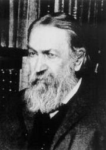

К вопросам истории и философии науки Планк обращался неоднократно в течение всей своей жизни. Его биографы Е. М. Кляус и У. И. Франкфурт выделили несколько групп, к которым можно отнести труды Планка в этой области:
Изучение истории науки, согласно Планку, помогает выявлять закономерности в развитии науки, а, значит, и предсказывать направление её дальнейшего развития; это важный вспомогательный инструмент, позволяющий расширить кругозор учёного и избежать повторения ошибок и заблуждений предшественников. При этом исследование эволюции науки неразрывно связано с изучением личности выдающихся учёных. С историко-научными интересами Планка были тесно связаны его взгляды по поводу таких философских проблем науки, как смысл закона сохранения энергии, принципов причинности и наименьшего действия, методология науки, отношение к свободе воли, связь науки с философией и религией и так далее. Признавая важность мировоззрения в деятельности учёного, Планк в целом придерживался материалистических взглядов: объявлял основной целью науки познание реально существующего внешнего мира, указывал на связь естествознания с практическими задачами, стоящими перед человеческим обществом, придавал эксперименту первостепенное значение в продвижении науки. Принципиальную роль он отводил созданию единой физической картины мира, как отражения в сознании явлений и взаимосвязей окружающего мира, и отмечал: «… работа исследователя состоит в том, чтобы всё больше приближать его картину мира к реальному миру».
Философские взгляды Планка нашли отражение в его дискуссии с Эрнстом Махом и Вильгельмом Оствальдом, воззрения которых были довольно популярны в конце XIX — начале XX века. По признанию Планка, в молодости он сам являлся сторонником философии Маха, согласно которой единственной реальностью являются наши собственные ощущения, а наука лишь экономично приспосабливает наши мысли к этим ощущениям. Возникновение маховского позитивизма, согласно Планку, обусловлено разочарованием от несбывшихся надежд, связывавшихся с чисто механистическим мировоззрением. Он писал, что Маху «принадлежит в полной мере та заслуга, что он перед лицом угрожающего скептицизма нашёл в ощущениях органов чувств единственный правильный исходный пункт всякого исследования природы. Но он пошёл дальше своей цели, ниспровергая вместе с механистическим мировоззрением всякое физическое миросозерцание». В частности, Мах, несмотря на многочисленные свидетельства науки начала XX века, по-прежнему отвергал существование атомов, которые Планк считал не менее реальными, чем планеты.
Первые расхождения Планка с махизмом обнаружились уже в его книге «Принцип сохранения энергии» (1887). Открытое выступление против Маха состоялось в декабре 1908 года в докладе «Единство физической картины мира» (Die Einhalt des physikalischen Weltbildes), прочитанном в Лейденском университете. Планк выступил в защиту атомистики, отвергавшейся Махом, высказал убеждённость в объективном существовании окружающего мира (а не только ощущений) и подверг критике «принцип экономии мышления», играющий основополагающую роль в философии Маха. Говоря о великих учёных прошлого, Планк указывал, что «опорой всей их деятельности была незыблемая уверенность в реальности их картины мира. Ввиду такого несомненного факта трудно отделаться от опасения, что ход мыслей передовых умов был бы нарушен, полёт их фантазии ослаблен, а развитие науки было бы роковым образом задержано, если бы принцип экономии Маха действительно сделался центральным пунктом теории познания»[164]. Мах выступил с ответом (1910), в котором в резких выражениях критиковал взгляды Планка. Среди прочего австрийский философ объявил атомизм формой религии, основанной, как и все религии, на предрассудках и невежестве. Планк продолжил дискуссию в очередной статье, где отмечал, что «столь формальная теория, как теория Маха, вообще не может дать никакого определённого физического результата — ни правильного, ни неправильного…» Подвергнув анализу конкретные выводы Маха, касающиеся физических явлений, Планк показал неадекватность представлений оппонента о законах термодинамики и выявил другие ошибки, возникающие вследствие опоры на принцип экономии мышления.
В последующие годы Планк неоднократно высказывался против позитивизма, который считал большой опасностью для науки; он вновь и вновь подчёркивал важность единства научных представлений, не зависящих от места, времени, культурных влияний и прочих субъективных факторов. Взгляды берлинского профессора критиковали не то лько «старые» махисты Вильгельм Оствальд и Йозеф Петцольд (нем. Joseph Petzold), но и молодой Эйнштейн, находившийся под большим влиянием позитивизма; критики отме чали, что между Махом и Планком гораздо больше общего, чем может показаться[170]. Планка обвиняли в чрезмерной резкости его выпадов, выходящей за пределы философск ой дискуссии. Однако со временем такие ведущие немецкие физики, как Зоммерфельд, Эйнштейн и Лауэ, поддержали Планка, отметив бесплодность философской системы Маха. Участие в споре с Махом принесло Планку славу философа и фактически открыло для него новую сферу деятельности. В этой связи теолог и историк Адольф фон Гарнак писал (1911):
Многие жалуются, что у нашего поколения нет философа. Это несправедливо: философы теперь принадлежат другим профессиям. Их зовут Макс Планк и Альберт Эйнштейн.— Цит. по Heilbron J. L. The Dilemmas of an Upright Man: Max Planck as Spokesman for German Science. — Berkeley: University of California Press, 1986. — P. 59—60.
В начале 1890-х годов под влиянием идей Маха Оствальд основал в Лейпциге так называемую энергетическую школу. «Энергетики» отрицали существование атомов и провозгласили единственной реальностью энергию. В 1891 году Планк , считавший недостаточным одного принципа сохранения энергии для построения всей механики, вступил с Оствальдом в переписку по поводу его книги «Учение об энергетике». Вскоре завязалась острая публичная дискуссия, в которой главным оппонентом новой школы стал Людвиг Больцман, критиковавший энергетику с точки зрения атомистики. Планк, выступивший на стороне Больцмана, придерживался несколько других позиций и указывал на неверную интерпретацию Оствальдом и его единомышленниками некоторых термодинамических понятий и на непонимание ими смысла второго начала термодинамики. Касаясь значения статьи Планка «Против новой энергетики» (Gegen die neuere Energetik, 1896), Эйнштейн писал:
Она [статья] представляет собой мастерски написанную краткую заметку, в которой показано, что энергетика, как эвристический метод, ничего не стоит и даже что она оперирует несостоятельными понятиями. Для каждого сторонника подлинно научного мышления чтение этой свежо написанной заметки является вознаграждением за ту досаду, которую он испытывал, читая те работы, против которых в ней ведётся борьба.— Эйнштейн А. Макс Планк как исследователь // Эйнштейн А. Собрание научных трудов. — М.: Наука, 1967. — Т. 4. — С. 10.
Интерес Планка к религии во многом был обусловлен его происхождением: ряд его родственников занимался теологией, сам он был воспитан в лютеранском духе и никогда не сомневался в ценности организованной религии. Известно, что за обеденным столом он произносил молитвы, а с 1920 года до конца жизни служил пресвитером (Kirchenältester) конгрегации в Груневальде. Планк неоднократно выступал против объединения науки с религией, понимаемой в смысле обобщённой этики. Он критиковал усилившиеся в 1920-е годы попытки исключить из науки причинность и взамен ввести «свободу воли», разоблачал спиритуализм, астрологию, теософию и другие направления, популярные после Первой мировой войны, предупреждал об опасности для науки взглядов таких авторов , как Освальд Шпенглер и Рудольф Штейнер. Вместе с тем Планк не противопоставлял науку и религию, а считал их в равной степени необходимыми. Большую известность приобрела лекция «Религия и естествознание» (Religion und Wissenschaft), прочитанная Планком впервые в мае 1937 года и впоследствии неоднократно публиковавшаяся. Это выступление было во многом реакцией на события в его стране, на действия фашистского режима; оно привлекало внимание своим оптимизмом, своеобразным синтезом разума и веры. В религии учёный видел основу нравственности и гуманизма:
Религия и естествознание не исключают друг друга, как кое-кто ныне думает или опасается, а дополняют и обуславливают друг друга… Ибо насколько знания и умения нельзя заменить мировоззренческими убеждениями, настолько же нельзя выработать правильное отношение к нравственным проблемам на основе чисто рационального познания. Однако оба эти пути не расходятся, а идут параллельно, встречаясь в бесконечности у одной и той же цели.— Планк М. Религия и естествознание // Вопросы философии. — 1990. — № 8.
Планк в своих лекциях никогда не упоминал имени Христа и считал нужным опровергать слухи о своём обращении в христианскую веру того или иного конкретного направления (например, в католицизм); он подчёркивал, что, хотя с юности был «настроен религиозно», он не верил «в личностного бога, не говоря уже о христианском боге». В этом плане его вера была подобна религиозному чувству Эйнштейна. Об этом писала и Лиза Мейтнер: «Конечно, вера Планка не имела формы какой-либо специальной религии; но он был религиозен (в смысле Спинозы и Гёте) и всегда это подчёркивал».